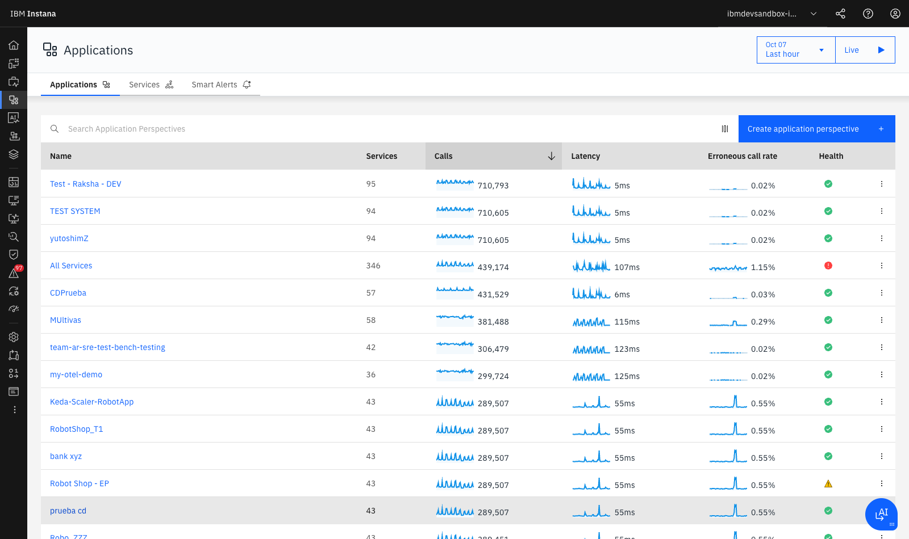
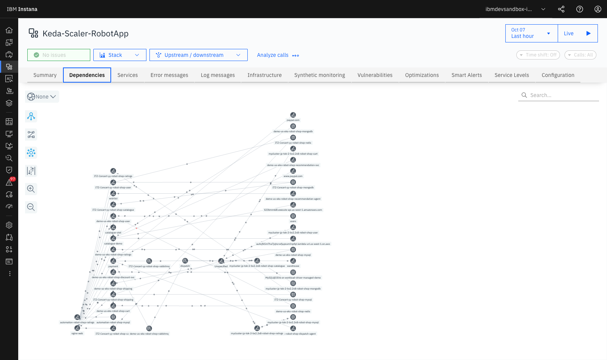
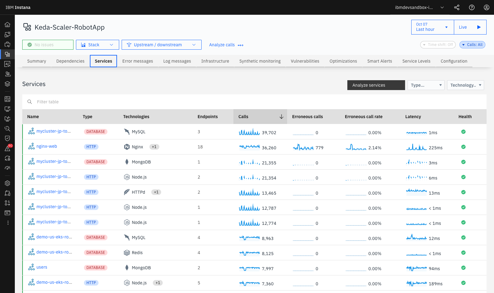
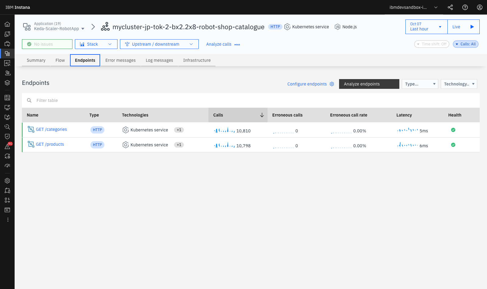

Lab 2 — Application Perspectives & Service Flow¶
LAB 2⏱ 20 minutos
1. ¿Qué es una Application Perspective?¶
En arquitecturas modernas de microservicios con cientos de pods efímeros y contenedores distribuidos en múltiples clústeres, la noción de "servidor físico" pierde relevancia frente a la perspectiva lógica del servicio de negocio.
Una Application Perspective (AP) en Instana es una vista semántica, dinámica y desacoplada de la infraestructura física que agrupa servicios basándose en etiquetas (tags), como:
- Entorno:
environment:production,environment:stagingoenvironment:dev. - Namespace de Kubernetes:
kubernetes.namespace:robot-shop. - Dominio funcional de negocio:
domain:banking,domain:ecommerce,domain:logistics. - Región geográfica o nube:
cloud.provider:aws,cloud.region:eu-west-1.
2. Catálogo de Aplicaciones en el Sandbox¶
- En el menú de navegación izquierdo, haz clic en Applications.
- Verás el catálogo global de perspectivas de aplicación activas en el entorno:

Figura 2.1: Catálogo de Application Perspectives con volumen de llamadas (Calls), Latencia media, Tasa de errores y estado de salud.
-
Observa las métricas sintetizadas en la tabla:
- Services: Cantidad de microservicios descubiertos automáticamente que componen la aplicación (ej. 43 servicios en
Keda-Scaler-RobotApp). - Calls (Sparkline): Tendencia y volumen total de transacciones (ej. ~288.000 llamadas/hora).
- Latency: Tiempo medio de respuesta (ej. 57 ms).
- Erroneous call rate: Porcentaje de llamadas fallidas (ej. 0.54%).
- Health: Evaluación global de salud calculada por IA combinando alertas e incidentes.
- Services: Cantidad de microservicios descubiertos automáticamente que componen la aplicación (ej. 43 servicios en
3. El Grafo Interactivo de Dependencias (Service Dependency Flow)¶
- Haz clic sobre Keda-Scaler-RobotApp o Robot Shop - EP.
- Selecciona la pestaña Dependencies en la barra superior:

Figura 2.2: Grafo interactivo de dependencias y flujo de llamadas en Keda-Scaler-RobotApp (Nginx, Catalogue, Cart, MongoDB, Redis, MySQL, RabbitMQ).
- Capacidades del Grafo de Dependencias:
- Auto-Discovery de Topología: Instana descubre las conexiones analizando las cabeceras de tracing en cada llamada de red (HTTP, gRPC, JDBC, AMQP). No requiere configuración manual previa.
- Flujo Animado de Tráfico: Las partículas y flechas animadas indican la dirección de las peticiones (Upstream ➔ Downstream).
- Clasificación Tecnológica: Distingue visualmente entre microservicios, bases de datos (
mongodb,redis,mysql), brokers de mensajería (rabbitmq,kafka) y servicios externos SaaS (paypal.com,aws.amazon.com).
4. Desglose y Análisis del Catálogo de Microservicios¶
- Haz clic en la pestaña Services dentro de la aplicación.
- Observarás la lista completa de microservicios con sus señales doradas (Golden Signals):

Figura 2.3: Desglose de servicios de la aplicación con métricas RED individuales (catalogue, cart, payment, shipping, user).
- Las 4 Señales Doradas (RED Metrics) en Instana:
flowchart LR
subgraph RED["Golden Signals - RED Framework"]
R["Rate - Calls per second"]
E["Errors - Percentage Failures"]
D["Duration - Latency P90 P95 P99"]
end
R --> EVAL["Diagnóstico de Salud del Servicio"]
E --> EVAL
D --> EVAL
style RED fill:#f8fafc,stroke:#64748b
style EVAL fill:#e0f2fe,stroke:#0284c7- Rate (Llamadas / Throughput): Mide la demanda sobre el servicio. Permite detectar caídas bruscas por caídas de pasarelas o picos de tráfico por ataques de denegación de servicio.
- Errors (Tasa de llamadas erróneas): Porcentaje de respuestas con excepciones no controladas o códigos de estado HTTP 5xx.
- Duration (Latencia y Percentiles): Instana calcula no solo la media, sino los percentiles críticos P90, P95 y P99. Esto es vital: un servicio con media de 30 ms puede tener un P99 de 2.000 ms afectando al 1% de los clientes más activos.
5. Inspección a Nivel de Endpoints de un Servicio¶
- Haz clic sobre el servicio catalogue (o cart).
- Selecciona la pestaña Endpoints:

Figura 2.4: Vista de endpoints HTTP del servicio catalogue con desglose de latencia y volumen de peticiones.
- Observa cómo Instana categoriza cada ruta REST expuesta (ej.
GET /products,GET /product/{id},POST /product). - Al hacer clic en un endpoint concreto, puedes consultar su distribución de latencia y acceder directamente a las trazas individuales que superaron el umbral aceptable.
6. Correlación de Logs en Contexto (Logs in Context)¶
Dentro de la vista de cualquier microservicio o endpoint, haz clic en la pestaña Log messages:
- Instana no requiere que abras una herramienta separada de gestión de logs.
- Muestra únicamente los logs generados por las instancias de ese servicio durante la ventana temporal seleccionada.
- Los logs con nivel
ERRORoWARNestán vinculados directamente con elTrace IDcorrespondiente para saltar con un clic al código causante.
7. Resumen y Checklist del Lab 2¶
Al finalizar este laboratorio, has adquirido las competencias para:
 Crear y estructurar Application Perspectives lógicas.
Crear y estructurar Application Perspectives lógicas.- Interpretar el grafo dinámico de dependencias (Service Dependency Flow).
- Identificar dependencias con componentes de almacenamiento (
MongoDB,MySQL,Redis) y mensajería (RabbitMQ). - Analizar las señales doradas (RED Metrics) y los percentiles de latencia (P95/P99).
- Correlacionar trazas y llamadas con Logs in Context.